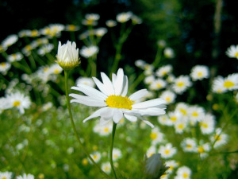

Hoje estou criando um site para colocar em prática o que aprendi até agora
Inserindo uma imagem para florir este site! Lembrando que devemos sempre utilizar imagens com liberação de uso.
Utilize os mecanismos disponíveis no Google para selecionar a imagem correta.

Escolhi Flores!
Precisamos, antes de inserir uma imagem, redimensioná-la para que o site não tenha problemas no momento de carregar essa imagem.Utilizar uma imagem de até 1.500. Melhor utilizar uma de tamanho bem menor.
Esta imagem de cima estava salva na pasta do exercício e a de baixo, estava numa sub-pasta.

A sequência do site, está baseada no que aprendi até agora. Como sempre diz o professor Guanabara: Não fique só olhando, coloque a mão na massa!
Ou como li no site Kinsta:
Com os conhecimentos e habilidades corretas em HTML, você pode construir e editar proficientemente um site para tornar sua visão uma realidade...
Podemos ver referências de flores e plantas em alguns sites como Minhas Plantas que é cheio de conteúdo sobre esse assunto.
Ou o site da Spagnol Plantas que também é referência no assunto.
Podemos acessar a outra página do nosso site por aqui.